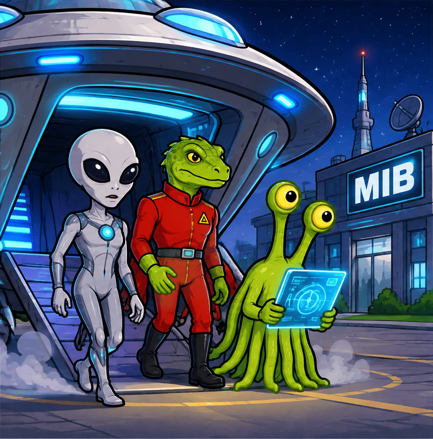
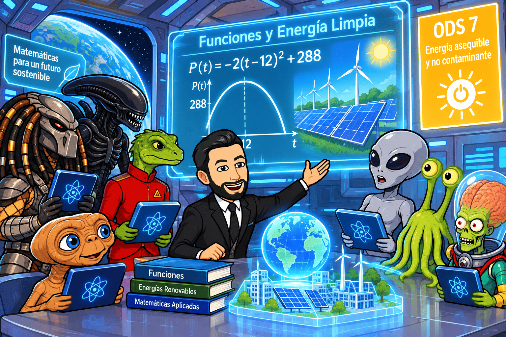

Una nueva energía para salvar la Tierra
1. Una señal inesperada
Era una mañana aparentemente normal en la sede de los hombres de negro (Men in Black). Los agentes J y K revisaban los informes de actividad extraterrestre cuando una alarma comenzó a sonar. En la pantalla principal apareció un mensaje procedente de un planeta situado a varios años luz de la Tierra.
El mensaje decía:
«Saludos, habitantes del planeta Tierra. Somos los habitantes de Xylonia. Hemos observado vuestro consumo energético y creemos que podéis mejorar vuestra tecnología. Disponemos de un sistema capaz de producir energía limpia, segura y prácticamente inagotable. Sin embargo, para comprenderlo necesitaréis aprender algo que quizá os resulte extraño: las funciones matemáticas».
El agente J miró a K con cierta desconfianza.
—¿Funciones? ¿No se supone que nosotros perseguimos alienígenas, no que estudiamos matemáticas?
K respondió tranquilamente:
—Precisamente por eso. Si queremos comprender su tecnología, tendremos que entender cómo funciona.
Pocas horas después, una nave aterrizó en una instalación secreta de los MIB. De ella descendieron varios extraterrestres que habían venido a compartir sus conocimientos. Entre ellos se encontraban un científico gris de grandes ojos negros, un visitante con aspecto de lagarto vestido con un uniforme rojo y un pequeño ser verde con tentáculos que llevaba una tableta holográfica.

El científico de Xylonia tomó la palabra:
—En nuestro planeta hemos aprendido que las matemáticas no son solamente números y operaciones. Son una herramienta para comprender cómo cambia el universo. Y una de las herramientas más útiles son las funciones.
2. ¿Qué tiene que ver una función con la energía?
El extraterrestre proyectó una imagen de una central energética terrestre.
—Imaginad que tenéis una máquina que produce electricidad. Su producción depende del tiempo que lleva funcionando. Si queremos saber cuánta energía genera después de una hora, dos horas o diez horas, necesitamos establecer una relación entre el tiempo y la energía producida.
En ese momento apareció una expresión:
\(E(t)=50t\)
El científico explicó:
—Esta función representa una máquina que produce 50 unidades de energía por cada hora de funcionamiento. La letra \(t\) representa el tiempo y \(E(t)\) la energía producida.
Los agentes observaron una tabla:
| Tiempo (horas) | Energía producida |
| 0 | 0 |
| 1 | 50 |
| 2 | 100 |
| 3 | 150 |
| 4 | 200 |
—Como podéis observar —continuó el extraterrestre—, a cada valor del tiempo le corresponde una única cantidad de energía. Eso es precisamente una función.
El agente J comenzó a comprenderlo.
—Entonces, si conozco la fórmula, puedo calcular la producción energética en cualquier momento.
—Exactamente —respondió el científico—. Y si representáis esos valores en una gráfica, podréis observar visualmente cómo evoluciona la producción.
La gráfica sería una recta creciente que pasa por el origen. Su pendiente representa la cantidad de energía que produce la máquina por unidad de tiempo.
Los MIB comprendieron que las funciones podían ayudarles a estudiar la producción energética, comparar máquinas y predecir resultados.
3. La tecnología de los visitantes: aprovechar el Sol
El siguiente extraterrestre, vestido con un uniforme rojo, presentó un dispositivo que parecía una placa solar mucho más avanzada que las conocidas en la Tierra.
—En nuestro planeta utilizamos la energía de las estrellas. Hemos desarrollado paneles capaces de transformar la radiación solar en electricidad con una gran eficiencia.
El agente K preguntó:
—¿Y cómo sabéis cuánta electricidad producirá un panel durante el día?
El visitante respondió proyectando una gráfica.
—La producción depende de la cantidad de luz que recibe el panel. Esta cantidad cambia a lo largo del día. Por tanto, necesitamos una función que relacione el tiempo con la energía generada.
Un modelo simplificado podría ser:
\(P(t)=-2(t-12)^2+288\)
En este modelo, \(t\) representa las horas transcurridas desde medianoche y \(P(t)\) la producción energética en unidades. Consideraremos únicamente el intervalo de 0 a 24 horas y entenderemos que los valores negativos del modelo no representan producción real.
El visitante señaló el vértice de la parábola.
—La función alcanza su máximo en \(t=12\), es decir, a mediodía. En ese momento, la producción es de 288 unidades.
El agente J observó la gráfica.
—¡Ahora entiendo los máximos y mínimos! Podemos saber cuándo se produce más energía y cuándo se produce menos.
—Así es. También podéis estudiar los intervalos de crecimiento y decrecimiento. Por la mañana la producción aumenta, alcanza un máximo y después disminuye durante la tarde.
El científico añadió que los modelos reales deben tener en cuenta factores como las nubes, la orientación de los paneles, la estación del año y la temperatura. Una función matemática es una representación simplificada de la realidad, no una fotografía perfecta de todo lo que ocurre.
4. El secreto de los científicos grises: almacenar energía
El científico gris abrió una pequeña cápsula metálica.
—Uno de los mayores retos de la energía renovable es que no siempre se produce cuando se necesita. Por ejemplo, los paneles solares generan electricidad durante las horas de luz, pero las personas también necesitan energía por la noche.
Los extraterrestres de Xylonia habían desarrollado unas baterías capaces de almacenar la electricidad sobrante y utilizarla posteriormente.
—Para diseñarlas correctamente —explicó—, necesitamos estudiar cómo disminuye la energía almacenada cuando se consume.
Proyectó la siguiente función:
\(E(t)=100\cdot\left(\frac{3}{4}\right)^t\)
—Esta función representa una batería que conserva cada hora el 75 % de la energía que tenía en la hora anterior.
La tabla mostraba:
| Tiempo (horas) | Energía restante |
| 0 | 100 |
| 1 | 75 |
| 2 | 56,25 |
| 3 | 42,19 |
| 4 | 31,64 |
—Como podéis observar, la energía disminuye con el tiempo. Estamos ante una función exponencial decreciente porque su base está comprendida entre cero y uno.
El agente K preguntó:
—¿Y podríamos utilizar esta función para calcular cuánto tiempo tardará la batería en alcanzar una determinada cantidad de energía?
—Por supuesto. Para resolver ese tipo de problemas también podéis utilizar los logaritmos, que son la operación inversa de las potencias.
El científico escribió:
\(f(x)=\log_2 x\)
—Las funciones logarítmicas permiten responder preguntas en las que la incógnita aparece en el exponente. Son muy útiles para estudiar tiempos de crecimiento, escalas y determinados procesos tecnológicos.
Los MIB empezaban a comprender que las diferentes familias de funciones no eran simples ejercicios de clase: cada una podía servir para representar un fenómeno distinto.
5. Los marcianos de Mars Attacks y el problema de las temperaturas
De repente, la puerta del laboratorio se abrió y entraron varios marcianos verdes con tentáculos. Uno de ellos llevaba un dispositivo que emitía un resplandor rojizo.
—¡Tenemos un problema! —exclamó el marciano—. Nuestra central de energía limpia se calienta demasiado cuando trabaja a máxima potencia.
El científico de Xylonia les pidió que explicaran cómo variaba la temperatura.
Los marcianos mostraron un registro en el que la temperatura aumentaba durante el funcionamiento de la máquina, permanecía estable durante un tiempo y después descendía al activar un sistema de refrigeración.
—En este caso —explicó el científico—, podemos utilizar una función definida a trozos. Esto significa que la expresión matemática cambia según el intervalo de tiempo que estudiemos.
Un modelo sencillo sería:
\[T(t)=
\begin{cases}
20+4t & 0\leq t<5\
40 & 5\leq t<8\
40-5(t-8) & 8\leq t\leq12
\end{cases} \]
Los agentes observaron que la función tenía tres partes:
- Durante las primeras cinco horas, la temperatura aumenta.
- Entre las horas cinco y ocho, permanece constante.
- A partir de la hora ocho, disminuye gracias al sistema de refrigeración.
—Esto nos permite estudiar cada etapa por separado —explicó el extraterrestre—. También podemos analizar si la función es continua, es decir, si los diferentes tramos se conectan sin saltos.
El agente J señaló la gráfica.
—Entonces, si la temperatura cambia bruscamente de un tramo a otro, puede aparecer una discontinuidad.
—Exactamente. Y en una central energética es importante detectar esos cambios para garantizar un funcionamiento seguro.
6. La función valor absoluto: medir distancias y detectar errores
El pequeño extraterrestre verde con tentáculos se acercó a la pizarra.
—Hay otra función muy sencilla que utilizamos continuamente en nuestros sistemas de navegación y control: la función valor absoluto.
Escribió:
\[f(x)=|x|=
\begin{cases}
-x & \text{si }x<0\
x & \text{si }x\geq0
\end{cases} \]
—El valor absoluto representa la distancia de un número al cero. Por eso nunca puede ser negativo.
El agente K preguntó:
—¿Y para qué sirve en una central energética?
—Imaginad que un sensor mide la diferencia entre la temperatura real de una máquina y la temperatura que debería tener. Si queremos conocer cuánto se ha desviado, independientemente de si está por encima o por debajo del valor esperado, podemos utilizar el valor absoluto.
Por ejemplo, si la temperatura ideal es de 30 grados:
\(D(T)=|T-30|\)
Si el sensor registra 35 grados:
\( D(35)=|35-30|=5\)
Si registra 25 grados:
\(D(25)=|25-30|=5\)
En ambos casos, la desviación es de cinco grados.
El extraterrestre dibujó la gráfica de la función valor absoluto. Tenía forma de V y su vértice se encontraba en el origen.
—Esta función es continua, tiene un mínimo absoluto en cero, es decreciente a la izquierda del origen y creciente a la derecha. Además, es una función par porque es simétrica respecto al eje Y.
Los agentes anotaron toda la información. Habían descubierto que una función aparentemente sencilla podía ser muy útil para controlar errores y garantizar la seguridad de una instalación.
7. El problema de las centrales energéticas: ¿cuánta energía necesitamos?
El visitante de uniforme rojo volvió a intervenir.
—Una civilización avanzada no necesita solamente producir energía. También debe saber cuánta necesita, cuándo la necesita y cómo distribuirla.
Para explicarlo, presentó una función que representaba el consumo eléctrico de una pequeña ciudad:
\(C(t)=100+20t\)
donde \(t\) representaba el tiempo en horas y \(C(t)\) el consumo en determinadas unidades.
Los MIB estudiaron la expresión.
—La ciudad comienza consumiendo 100 unidades y su consumo aumenta 20 unidades por hora —dijo J.
—Correcto. Pero también necesitamos conocer la tasa de variación media, que nos indica cuánto cambia una magnitud, como promedio, entre dos instantes.
El científico escribió la fórmula:
\(TVM=\dfrac{f(b)-f(a)}{b-a}\)
Después propuso calcularla entre las horas 2 y 5.
\(C(2)=100+20\cdot2=140\)
\(C(5)=100+20\cdot5=200\)
Por tanto:
\(TVM=\dfrac{200-140}{5-2}=\dfrac{60}{3}=20\)
—El consumo aumenta, de media, 20 unidades por hora.
K comprendió que este cálculo podía ayudar a planificar la producción y evitar que una ciudad consumiera más electricidad de la que las centrales podían suministrar.
8. Una energía para todos: el Objetivo de Desarrollo Sostenible 7
Cuando los extraterrestres terminaron sus explicaciones, el científico de Xylonia mostró una imagen de la Tierra.
—Nuestro propósito no es venderos una tecnología secreta ni convertir vuestro planeta en una central energética. Queremos compartir conocimientos para que podáis construir un futuro mejor.
En la pantalla apareció el Objetivo de Desarrollo Sostenible número 7 de las Naciones Unidas:
Garantizar el acceso a una energía asequible, segura, sostenible y moderna para todas las personas.
El científico explicó que este objetivo forma parte de los 17 Objetivos de Desarrollo Sostenible, conocidos como ODS, que buscan mejorar las condiciones de vida de las personas y proteger el planeta.
El ODS 7 pretende que todas las personas puedan acceder a una energía moderna y segura, que se impulse el uso de fuentes renovables y que se mejore la eficiencia energética.
—La energía solar, eólica e hidráulica son ejemplos de fuentes renovables —continuó—. Pero producir energía limpia no es suficiente. También hay que conseguir que llegue a todas las personas, que sea asequible y que se utilice de forma responsable.
Los MIB comprendieron que las funciones matemáticas podían contribuir a ese objetivo de muchas maneras:
- Permiten predecir la producción de energía solar y eólica.
- Ayudan a calcular el consumo eléctrico de viviendas y ciudades.
- Facilitan el estudio de las baterías y los sistemas de almacenamiento.
- Permiten analizar las temperaturas y detectar posibles problemas.
- Ayudan a comparar tecnologías y mejorar su eficiencia.
- Permiten estudiar cómo cambia la demanda energética a lo largo del día.
El agente J observó la imagen del planeta.
—Así que las matemáticas no sirven solamente para aprobar un examen. También pueden ayudarnos a mejorar la vida de las personas.
—Exactamente —respondió el científico—. Una función es un modelo matemático, pero también puede ser una herramienta para tomar mejores decisiones.

9. La última prueba: diseñar una ciudad energética
Antes de marcharse, los extraterrestres propusieron un último reto a los MIB.
La humanidad necesitaba diseñar una ciudad capaz de utilizar energía limpia durante todo el año. Para conseguirlo, los agentes debían analizar los datos de producción y consumo.
El proyecto incluía:
- Paneles solares cuya producción variaba a lo largo del día.
- Aerogeneradores cuya producción dependía de la velocidad del viento.
- Baterías para almacenar la energía sobrante.
- Sensores para controlar la temperatura de las instalaciones.
- Sistemas inteligentes para distribuir la electricidad según las necesidades de cada barrio.
Los científicos explicaron que cada uno de estos sistemas podía representarse mediante funciones diferentes.
Una función cuadrática podía servir para modelizar determinados cambios de producción a lo largo del día. Una exponencial podía describir la evolución de la energía almacenada. Una función definida a trozos podía representar las diferentes fases de funcionamiento de una máquina. Una función racional podía utilizarse para estudiar ciertas relaciones entre magnitudes, siempre teniendo en cuenta las restricciones de su dominio.
Los agentes tuvieron que interpretar las gráficas, comparar resultados y calcular las necesidades de energía de la ciudad.
Después de varias horas de trabajo, consiguieron diseñar un sistema capaz de combinar distintas fuentes renovables, almacenar los excedentes y distribuir la electricidad de forma más eficiente.
No habían encontrado una fuente de energía mágica. Habían aprendido a utilizar los recursos disponibles de una manera más inteligente.
10. La revelación final
Cuando los extraterrestres se preparaban para regresar a su planeta, el agente K se acercó al científico de Xylonia.
—Tengo una última pregunta. ¿Por qué habéis venido hasta la Tierra para enseñarnos matemáticas?
El extraterrestre respondió:
—Porque hemos observado que vuestra especie tiene una enorme capacidad para aprender, investigar y mejorar. Pero necesitáis comprender que el conocimiento debe utilizarse para construir un futuro mejor, no solamente para obtener beneficios inmediatos.
El científico señaló la pantalla, donde aparecía una última frase:
«Las matemáticas permiten comprender el mundo. Lo que hagamos con ese conocimiento depende de nosotros».
Los MIB habían aprendido algo más importante que una colección de fórmulas. Habían descubierto que las funciones podían ayudar a comprender fenómenos reales, diseñar tecnologías, ahorrar recursos y avanzar hacia un modelo energético más sostenible.
Desde aquel día, la sede de los Men in Black incorporó una nueva unidad de investigación: el Departamento de Matemáticas y Energía Intergaláctica.
Su primera norma fue muy clara:
Ninguna tecnología estará verdaderamente avanzada si no contribuye también a mejorar la vida de las personas y a proteger el planeta.
Y así comenzó una nueva etapa para la Tierra: una etapa en la que las matemáticas, la ciencia y la cooperación entre civilizaciones se convirtieron en herramientas fundamentales para construir un futuro energético más limpio, seguro y justo.
FIN DE LA MISIÓN.
Preguntas de comprensión lectora
1. Comprensión general
¿Por qué los Men in Black necesitan aprender teoría de funciones? Explica qué relación existe entre las matemáticas y las tecnologías extraterrestres que aparecen en la lectura.
2. Las funciones y la producción energética
La máquina de los científicos de Xylonia produce energía según la función:
\(E(t)=50t\)
a) ¿Qué representan las variables (t) y (E(t))?
b) ¿Cuánta energía produce en 6 horas?
c) ¿Por qué esta relación es una función?
3. Energía solar y funciones cuadráticas
La producción de los paneles solares se representa mediante:
\(P(t)=-2(t-12)^2+288\)
a) ¿A qué hora se alcanza la producción máxima?
b) ¿Cuál es el valor de esa producción máxima?
c) ¿Por qué la gráfica es una parábola abierta hacia abajo?
4. Almacenamiento de energía y funciones exponenciales
La batería extraterrestre sigue la función:
\(E(t)=100\cdot\left(\frac34\right)^t\)
a) ¿Qué cantidad de energía tiene inicialmente?
b) ¿Qué porcentaje de energía conserva cada hora?
c) ¿Por qué se trata de una función exponencial decreciente?
5. Temperatura y funciones definidas a trozos
¿Por qué los científicos utilizan una función definida a trozos para representar la temperatura de la central energética?
Explica qué sucede en cada uno de los tres intervalos de tiempo del modelo presentado en la lectura.
6. El valor absoluto y la seguridad
Los marcianos utilizan la expresión:
\(D(T)=|T-30|\)
a) ¿Qué representa esta función?
b) ¿Por qué el valor absoluto resulta útil para detectar desviaciones de temperatura?
c) Si la temperatura es de 24 grados, ¿cuál es la desviación respecto a la temperatura ideal?
7. La tasa de variación media
El consumo eléctrico de una ciudad viene dado por:
\(C(t)=100+20t\)
Según el texto, el consumo pasa de 140 a 200 unidades entre las horas 2 y 5.
a) ¿Qué es la tasa de variación media?
b) ¿Cuál es su valor en ese intervalo?
c) ¿Qué significa ese resultado en el contexto del problema?
8. Las funciones y las energías renovables
Explica tres aplicaciones diferentes de las funciones matemáticas en el desarrollo de tecnologías relacionadas con las energías renovables.
9. Relación con el ODS 7
¿Qué pretende conseguir el Objetivo de Desarrollo Sostenible número 7? Explica cómo pueden contribuir las matemáticas y la tecnología al cumplimiento de este objetivo.
10. Reflexión personal: una misión para la humanidad
Imagina que formas parte del equipo de científicos de los Men in Black.
¿Qué tecnología energética diseñarías para mejorar el futuro de la Tierra? Explica qué problema resolvería, qué tipo de función matemática podría utilizarse para estudiar su funcionamiento y cómo contribuiría a conseguir una energía más asequible, segura y sostenible.
La energía a debate...
¿Qué energía queremos para nuestro futuro?
Imaginad que dentro de unos años recibimos una visita extraterrestre. Sus habitantes han conseguido desarrollar una civilización avanzada, pero no gracias a máquinas más potentes o a consumir cada vez más recursos, sino porque aprendieron a utilizar la energía de una manera inteligente y sostenible.
Cuando los agentes de los MIB les preguntan cuál es su secreto, uno de los científicos responde:
—En nuestro planeta comprendimos que la energía es imprescindible para vivir, pero también que no todas las formas de obtenerla tienen las mismas consecuencias. Durante mucho tiempo pensamos que podíamos consumir recursos sin límite. Nos equivocamos.
La energía está presente en prácticamente todas nuestras actividades cotidianas. Necesitamos electricidad para iluminar nuestras casas, cargar nuestros dispositivos, conservar los alimentos, utilizar los medios de transporte, fabricar productos y mantener en funcionamiento hospitales, colegios e industrias. Nuestra sociedad depende profundamente de ella.
Sin embargo, no toda la energía procede de las mismas fuentes.
Durante décadas, gran parte de la energía que hemos utilizado se ha obtenido mediante la quema de combustibles fósiles, como el carbón, el petróleo y el gas natural. Estos recursos han permitido un enorme desarrollo industrial y tecnológico, pero su utilización libera gases de efecto invernadero, especialmente dióxido de carbono. Estos gases retienen parte del calor que la Tierra emite y contribuyen al calentamiento global.
El efecto invernadero es un fenómeno natural necesario para mantener una temperatura adecuada en nuestro planeta. El problema aparece cuando las actividades humanas aumentan excesivamente la concentración de estos gases y alteran el equilibrio climático.
La quema de combustibles fósiles, la deforestación, determinados procesos industriales, la agricultura y la ganadería intensivas y los modelos de transporte muy dependientes del petróleo contribuyen al cambio climático. Sus consecuencias incluyen el aumento de las temperaturas, el deshielo de los glaciares, la subida del nivel del mar y una mayor frecuencia o intensidad de determinados fenómenos meteorológicos extremos, como olas de calor y sequías.
Pero ¿significa esto que debemos renunciar al desarrollo y a la tecnología? No necesariamente. El verdadero reto consiste en encontrar formas de producir y consumir energía que permitan mejorar nuestra calidad de vida sin poner en peligro el futuro del planeta.
Aquí entran en juego las energías renovables.
La energía solar aprovecha la radiación del Sol; la eólica utiliza la fuerza del viento; la hidráulica transforma la energía del agua en movimiento; y otras fuentes, como la geotérmica, aprovechan el calor interno de la Tierra. Estas fuentes se renuevan de manera natural y, durante su funcionamiento, suelen generar muchas menos emisiones de gases de efecto invernadero que los combustibles fósiles.
Sin embargo, tampoco debemos pensar que las energías renovables son una solución mágica sin inconvenientes. Los paneles solares y los aerogeneradores necesitan materiales para fabricarse, ocupan espacio y requieren infraestructuras. Además, algunas fuentes dependen de las condiciones meteorológicas y necesitan sistemas de almacenamiento o redes eléctricas capaces de adaptarse a la producción.
Por eso, la solución no consiste únicamente en cambiar unas fuentes de energía por otras. También debemos aprender a consumir menos energía cuando sea posible, evitar el desperdicio, mejorar la eficiencia de los edificios, utilizar transportes menos contaminantes y apostar por tecnologías más sostenibles.
Esta transformación está relacionada con el Objetivo de Desarrollo Sostenible número 7 (ODS 7): Energía asequible y no contaminante, incluido en la Agenda 2030 de las Naciones Unidas.
Este objetivo pretende garantizar que todas las personas tengan acceso a una energía asequible, segura, sostenible y moderna. Porque la energía no es solamente una cuestión tecnológica o económica: también es una cuestión de justicia social.
Mientras algunas personas disfrutan de electricidad y calefacción sin dificultades, otras viven sin un acceso estable a estos servicios. Y mientras unos países consumen enormes cantidades de energía, otros apenas disponen de los recursos necesarios para cubrir sus necesidades básicas.
Esto nos lleva a una pregunta importante: ¿es justo pedir a todos los países que reduzcan su consumo energético de la misma manera, cuando no todos han tenido las mismas oportunidades de desarrollo ni consumen la misma cantidad de recursos?
Los extraterrestres explican entonces a los agentes de los MIB que las matemáticas fueron fundamentales para transformar su planeta. Gracias a ellas pudieron estudiar la producción de energía solar y eólica, calcular el consumo de sus ciudades, predecir las necesidades de electricidad, analizar la eficiencia de sus instalaciones y diseñar sistemas de almacenamiento.
Las funciones matemáticas les permitieron relacionar variables como el tiempo, la temperatura, la producción energética o el consumo eléctrico. Así descubrieron cuándo sus instalaciones producían más energía, en qué momentos aumentaba la demanda y cómo podían aprovechar mejor los recursos disponibles.
Antes de marcharse, el científico extraterrestre deja una última reflexión:
—En nuestro planeta aprendimos que el futuro no depende solamente de cuánta energía somos capaces de producir, sino de cómo la obtenemos, cómo la distribuimos y cómo la utilizamos. La tecnología puede ayudarnos, pero las decisiones las tomamos nosotros.
Los agentes de los MIB comprenden entonces que la amenaza más importante para la Tierra no procede necesariamente del espacio exterior. También puede surgir de nuestras propias decisiones.
Y ahora la pregunta es para vosotros:
Si tuvierais la oportunidad de diseñar el futuro energético de vuestro planeta, ¿qué decisiones tomaríais?
Debate en clase: ¿Estamos dispuestos a cambiar nuestro modelo energético?
La lectura puede dar paso a un debate en el que no se trata de encontrar una única respuesta correcta, sino de argumentar, escuchar diferentes opiniones y aprender a cuestionar nuestras propias ideas.
Cuestiones para iniciar el debate
1. ¿Creéis que nuestra sociedad depende demasiado de la energía? ¿Podríamos vivir consumiendo mucha menos?
2. ¿Es posible mantener nuestro nivel de vida sin utilizar combustibles fósiles?
3. ¿Deberían prohibirse progresivamente el carbón, el petróleo y el gas natural, aunque todavía sean importantes para la economía de muchos países?
4. ¿Quién tiene mayor responsabilidad en el cambio climático: los gobiernos, las grandes empresas o los ciudadanos? ¿Por qué?
5. ¿Es justo que los países más desarrollados pidan a los países menos desarrollados que reduzcan su consumo energético?
6. ¿Estaríais dispuestos a cambiar algunos hábitos cotidianos para reducir vuestro consumo de energía? ¿Cuáles?
7. ¿Qué inconvenientes pueden tener las energías renovables? ¿Cómo podríamos solucionarlos?
8. ¿Debería tener prioridad la producción de energía barata o la protección del medioambiente?
9. ¿Puede la tecnología resolver el problema del cambio climático o necesitamos cambiar también nuestra forma de vivir y consumir?
10. ¿Qué medidas debería adoptar vuestro municipio para avanzar hacia un modelo energético más sostenible?
Una pregunta final para cerrar el debate
El futuro está en nuestras manos...
¿Qué estamos dispuestos a cambiar hoy para que las próximas generaciones puedan vivir en un planeta habitable?
Cada grupo deberá proponer tres medidas concretas para mejorar el modelo energético de su entorno y explicar por qué serían útiles.
Normas para el debate:
- Respetar los turnos de palabra y las opiniones diferentes.
- Justificar las intervenciones con argumentos y ejemplos.
- Diferenciar los datos científicos de las opiniones personales.
- Escuchar para comprender, no solamente para responder.
- Intentar llegar a propuestas realistas y consensuadas.
La finalidad es comprender que el cambio climático es un desafío colectivo y que las matemáticas, la ciencia, la tecnología y nuestras decisiones cotidianas pueden contribuir a construir un futuro más sostenible.